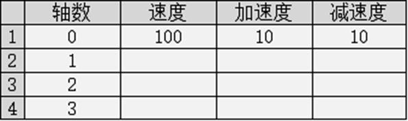
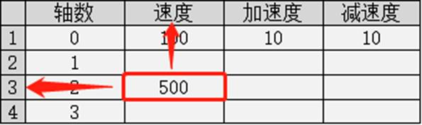

|
类型 |
报表视图元件操作指令 |
|
描述 |
设置/获取表格指定项数值 表格项指定为数值类型时调用该指令设置获取数据。 获取数值时，多选只会返回选中的第一个单元格数值。 |
|
语法 |
设置/获取表格数值，只写入单个数据 HMI_TABLEVALUE (winid, controlid, row, col, value) value = HMI_TABLEVALUE (winid, controlid, row, col) winid：HMI文件里面窗口编号 controlid：元件编号 row：表格指定行，-1表示选中所有行 col：表格指定列，-1表示选中所有列 value：表格指定项数值 多选时，选中的项目都写入相同value值。 获取时，不支持多选。
批量设置/获取表格数值，从table写入或读取 HMI_TABLEVALUE (winid, controlid, row, col, tabid, ifset) tabid：表格数值保存得table起始位置 Ifset：是否写入，0-读取，1-写入
注：选中光标行和列同时等于-1时不表示为全选，表示不选中，该指令只能选中一个单元格、一行或者一列。行号、列号从0开始编码（表头行/列不计入行/列号）！ |
|
适用控制器 |
支持RTHmi |
|
例子 |
HMI_TABLEVALUE(16, 1 ,2, 1, 500) ’将16号窗口第1个元件的第3行2列单元格的数值设置为500 运行效果如下： Ø 在“在线命令”中输入该指令，表格中第3行2列单元格的数值被设为500   |